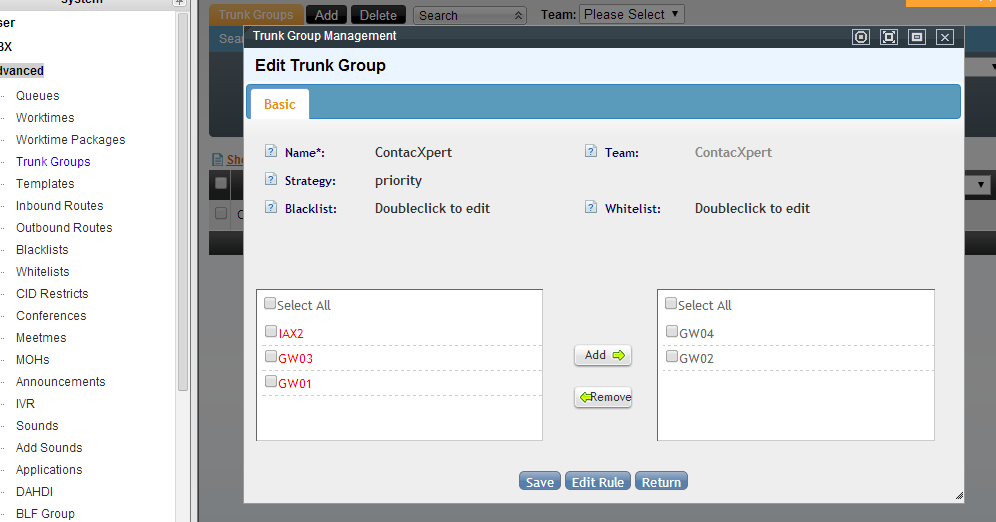
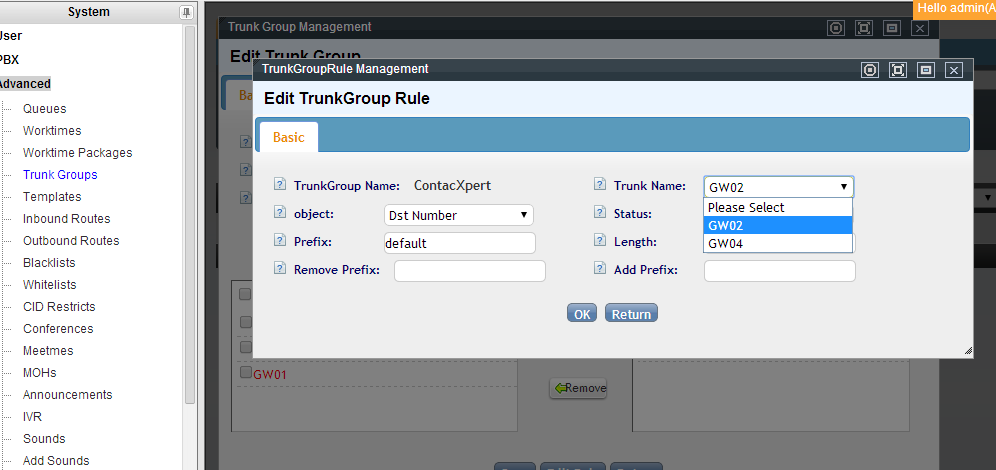
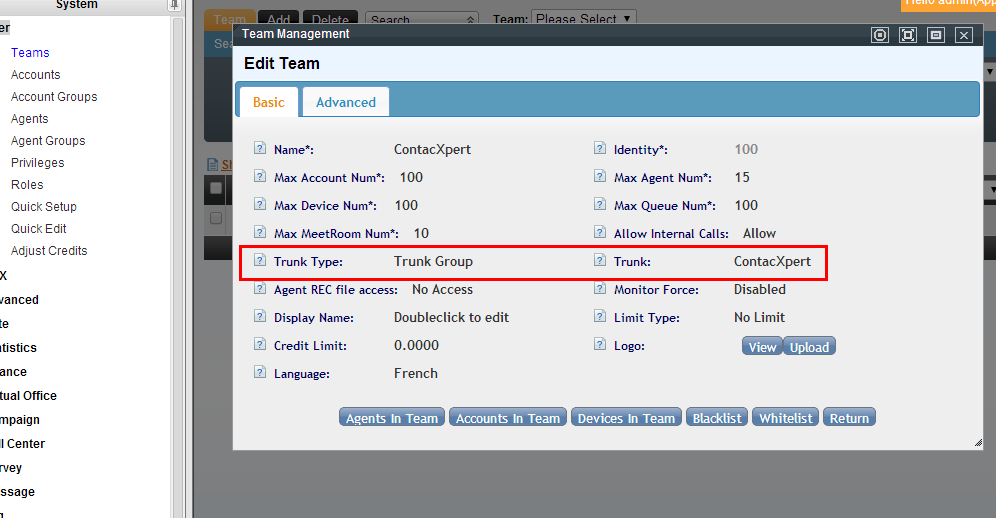
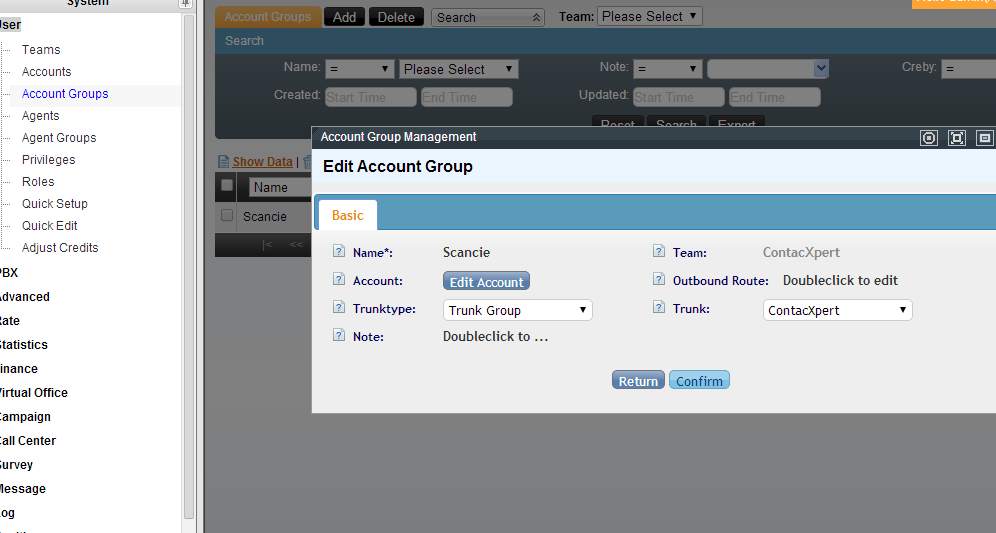
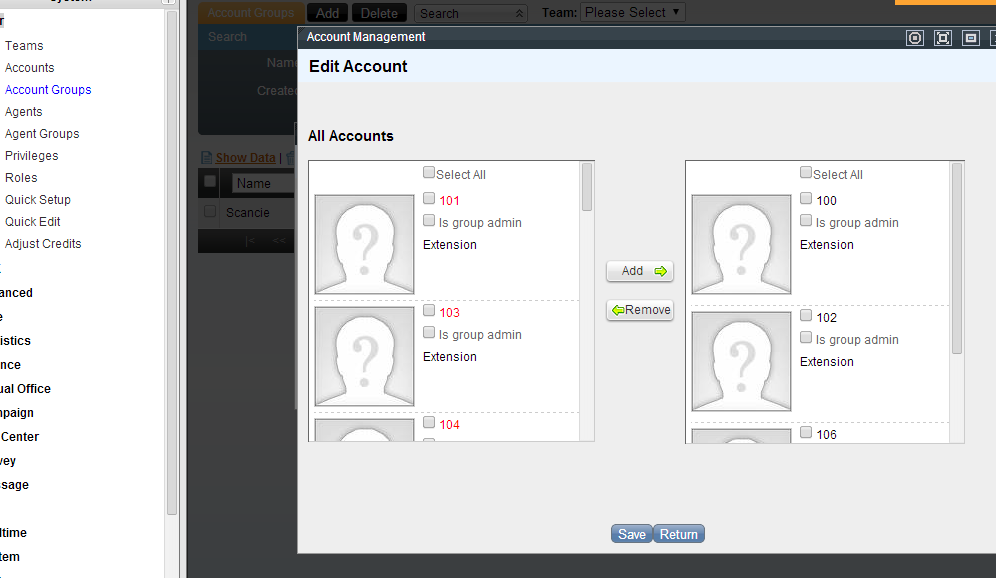
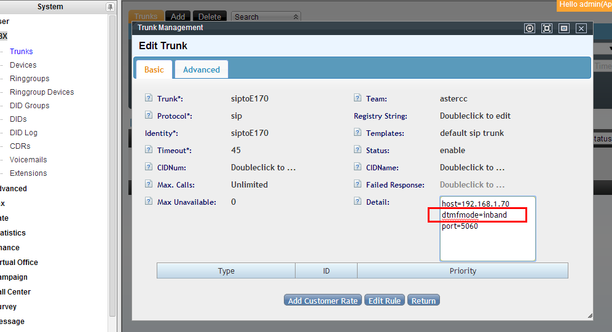

FAQ: PBX y telefonía¶
Troncales y numeración¶
¿Por qué el DID que configuré muestra una letra en vez del número?¶
Ocurre cuando la extensión de un sistema A se usa como troncal en un sistema B — el DID entrante aparece como una letra (ej. S) en vez del número esperado, y si se escribe el número directo el sistema indica "no hay ruta de entrada". Solución: en la cadena de registro del troncal, agrega una barra (/) seguida del número de extensión al final del registro string.
¿Cómo restrinjo números que llaman al sistema?¶
Hay dos mecanismos, según el caso:
Lista negra de llamadas entrantes (para números específicos): en PBX avanzado → Lista negra de entrada → Agregar, indica el número y el equipo/cuenta/extensión al que aplica la restricción. Para bloquear muchos números a la vez, impórtalos por CSV desde Administración avanzada del call center → Importar datos, seleccionando la tabla "lista negra de entrada" — el estado de la importación se revisa en Gestión de tareas por lotes → Gestión de planes de importación.
Ruta de entrada (para un patrón, ej. todo un prefijo): en PBX avanzado → Rutas de entrada → Agregar, configura coincidencia de número que llama como "coincidencia de prefijo" (ej. 150), y define el destino de transferencia como "finalizar" con razón "ocupado" o "colgar".
¿Cómo configuro el número que llama (callerID) de una extensión?¶
Cada extensión tiene un número/nombre de llamante por defecto y un número/nombre de llamante para llamadas salientes independiente. La prioridad al marcar por un troncal es:
- Si el troncal tiene activado "forzar uso de callerID saliente" y tiene su propio número/nombre configurado → se usa el del troncal.
- Si el troncal fuerza el uso pero no tiene número propio configurado → se usa el número/nombre de llamante saliente de la extensión.
- Si el troncal no fuerza el uso y tiene número propio → se usa el del troncal.
- Si el troncal no fuerza el uso y no tiene número propio → se usa el número/nombre por defecto de la extensión.
Si ni el troncal ni la extensión tienen configurado un número de llamante saliente, se usa siempre el número/nombre por defecto de la extensión.
La extensión marca normal, pero con marcación predictiva el destino no timbra¶
Ver Solución de problemas — es un síntoma típico de un troncal que exige verificación del número que llama; se soluciona configurando el callerID en la tarea de campaña o forzando el número saliente en el troncal.
¿Cómo fuerzo el uso de un troncal específico para las llamadas salientes de un usuario o equipo?¶
Se hace combinando un grupo de troncales con reglas de selección (ver Funciones avanzadas de PBX para el detalle de grupos de troncales):
- Agrupa los troncales: crea un grupo de troncales que incluya solo los troncales que quieres usar para este caso.
- Define reglas de selección: en las reglas del grupo, indica prefijo y/o longitud del número marcado — si el número coincide, el sistema usa ese grupo de troncales. Desde aquí también se puede cambiar el callerID de las llamadas entrantes de ese grupo.
- Aplica la regla a todo el equipo: en la configuración del equipo, selecciona este grupo de troncales para que la regla aplique a todos sus miembros.
- Aplica la regla solo a usuarios específicos: agrupa a esos usuarios en un grupo de cuentas y asigna el grupo de troncales únicamente a ese grupo de cuentas — cada agente usa las reglas que corresponden a su cuenta.





Extensiones y registro¶
¿Cómo cambio el puerto de registro SIP por defecto?¶
En Sistema → Configuración → Configuración básica de SIP → bindport, edita el valor del puerto (por defecto 5060) y recarga la configuración. A partir de ese momento, los softphones deben apuntar al nuevo puerto para poder registrarse — si se cambia, por ejemplo, a 80, chocará con el puerto HTTP y el registro fallará. Recuerda también abrir el nuevo puerto en el firewall.
¿Por qué mis extensiones no logran registrarse?¶
Las tres causas más comunes de una extensión en estado UNREGISTERED o UNKNOWN (visible en PBX → Gestión de extensiones):
- Usuario/contraseña incorrectos: confirma que el ID de usuario del softphone incluya el identificador del equipo (ej.
astercc-5001, no solo5001) y que la contraseña coincida con la configurada en la extensión. - Firewall bloqueando el puerto: revisa el estado con
/etc/init.d/iptables status; si es necesario, detén el firewall temporalmente (service iptables stop) para confirmar el diagnóstico, y luego abre el puerto SIP correspondiente en la configuración persistente. - Conflicto de puerto: el puerto SIP configurado ya está en uso por otro servicio. Revisa qué proceso lo ocupa con
lsof -iy cambia el puerto de registro si es necesario (ver pregunta anterior).
¿Cómo configuro un teléfono IP con registro SIP sobre TLS (cifrado)?¶
Ver la guía completa en Diagnóstico de red y VoIP → Configurar SIP sobre TLS. Resumen: agregar tls al transporte SIP del sistema, generar certificado con ast_tls_cert, habilitar TLS en sip.conf, subir el certificado de CA al teléfono y cambiar su transporte a TLS. Abre también el puerto TCP 5061 (además del 5060) en el firewall para el registro cifrado.
Audio, códecs y DTMF¶
¿Cómo elijo el modo DTMF correcto?¶
DTMF (Dual Tone Multi Frequency) es la señal que se genera al presionar las teclas del teléfono — es lo que permite navegar un IVR por teclado. Se configura por troncal con el parámetro dtmfmode:
| Modo | Cuándo usarlo |
|---|---|
rfc2833 |
El más universal — modo por defecto en las plantillas SIP de AsterCC. Úsalo salvo que tengas una razón específica para otro |
auto |
Deja que el sistema negocie el modo con el proveedor |
inband |
Requiere que el códec de voz sea ulaw o alaw — necesario con operadores/troncales que no soportan rfc2833 |
info |
Vía SIP INFO |
El modo debe coincidir con lo que espera el proveedor del troncal. Si un cliente no puede navegar un IVR con el teclado, este es el primer parámetro a revisar.

¿Cómo agrego soporte para el códec G.729?¶
G.729 es un códec de compresión de voz que equilibra bien ancho de banda y calidad. En la versión comercial de AsterCC no viene incluido por defecto y hay que instalarlo manualmente:
- Descarga el decodificador según la arquitectura del CPU:
# 32 bits wget http://asterisk.hosting.lv/bin162/codec_g729-ast16-icc-glibc-pentium4.so # 64 bits wget http://asterisk.hosting.lv/bin162/codec_g729-ast16-icc-glibc-x86_64-pentium4.so - Copia el archivo
.soal directorio de módulos de Asterisk:/usr/lib/asterisk/modules/(o/usr/lib64/asterisk/modules/en 64 bits). - Cárgalo en caliente:
asterisk -rx "module load codec_g729-ast16-icc-glibc-<arch>.so"— debe responderLoaded codec_g729.... - Verifica con
asterisk -rx "core show translation"— si aparece una columna con números bajog729, el códec está activo. - Para que se cargue automáticamente al reiniciar, agrégalo a
/etc/asterisk/modules.conf:echo "load => codec_g729-ast16-icc-glibc-<arch>.so" >> /etc/asterisk/modules.conf
¿Cómo configuro y administro la música en espera?¶
La música en espera se gestiona de forma centralizada en PBX avanzado → Gestión de música en espera, y luego se asigna en distintos lugares del sistema:
| Dónde se aplica | Ruta de configuración |
|---|---|
| Música en espera global del sistema | Editar el perfil default, subir un archivo .wav nuevo |
| Nueva música en espera con nombre propio | Agregar un perfil nuevo (nombre, identificador, equipo, archivo de voz) |
| Música en espera de una cola | Editar la cola → Información básica → campo "música en espera" |
| Música en espera de un grupo de timbrado | Editar el grupo de timbrado → Información básica → campo "música en espera" |
| Tono de retorno personalizado de una extensión | Editar la extensión → Información avanzada → campo "tono de retorno" (ringback) |
Tras cualquier cambio, hay que guardar y recargar la configuración (botón de recarga) para que el sistema lo aplique.
El audio se corta o solo se escucha en un sentido (llamadas con NAT)¶
Es un síntoma típico cuando el servidor está detrás de un router o firewall (NAT) y las extensiones se registran desde fuera de la red local. Hay que configurar la IP pública y la red interna del servidor en la configuración SIP: el campo externip debe llevar la IP pública del servidor, y localnet el segmento de red interno (visible con ifconfig) — si hay más de un segmento, se separan por comas.
IVR y enrutamiento¶
¿Cómo transfiero una llamada a un IVR desde la plataforma del agente?¶
En la página del agente, mientras está en una llamada, haz clic en Consultar en la barra superior e ingresa el número correspondiente al IVR — la llamada se transfiere al menú de voz.
¿Cómo funciona el aparcado de llamadas (call parking) con números de estacionamiento?¶
El aparcado de llamadas permite que una extensión deje en espera una llamada y que otra extensión del mismo equipo la retome. La tecla rápida de aparcado por defecto es 700, con 10 números de retorno reservados del 701 al 710. También se puede configurar una tecla rápida propia por equipo (si equipo y sistema tienen teclas distintas, ambas funcionan en paralelo).
Para aparcar una llamada: durante la llamada, la extensión marca *52 (se escucha "transfiriendo..."), luego digita 700 — el sistema responde con el número de retorno asignado (ej. 701). Cualquier extensión del equipo que marque ese número retoma la llamada.
Warning
Los números 700 a 710 están reservados por el sistema — no los uses como número interno al crear colas o IVR, o el sistema mostrará error.
Diagnóstico VoIP básico¶
¿Qué significan los errores SIP 408, 403, 484 y 488?¶
| Código | Significado | Causa típica / solución |
|---|---|---|
408 Request Timeout |
Timeout de registro | El servidor no ve ningún paquete de respuesta — revisa el firewall local y, si el sistema está detrás de NAT, confirma que el puerto UDP 5060 está correctamente redirigido |
403 Forbidden |
Usuario/contraseña incorrectos | Verifica las credenciales de registro de la extensión |
484 Address Incomplete |
Error de marcado | Desactiva el soporte de video en la configuración SIP del troncal |
488 Not Acceptable Here |
Incompatibilidad de códec | Confirma que el códec de voz configurado coincide en ambos extremos (servidor y proveedor/dispositivo) |
Para ver el tráfico SIP en vivo y diagnosticar estos casos, usa ngrep — ver Diagnóstico de red y VoIP → Depuración de SIP con ngrep.
Una tarjeta PRI/E1 muestra el error "PRI got event: HDLC Abort (6) on D-channel of span"¶
Suele indicar un problema físico en el canal de línea. Prueba conectar el mismo cable a otro puerto de la tarjeta — si funciona ahí, revisa la configuración por defecto de ese puerto específico comparándola con otros puertos que sí funcionan.
Una llamada queda "colgada" en estado Up y no se puede volver a marcar¶
Síntoma: el agente y el cliente ya colgaron, pero el canal sigue apareciendo activo en core show channels y no se puede realizar ni recibir llamadas en esa extensión. Se libera manualmente desde la consola de Asterisk:
core set verbose 0
core show channels concise # lista los canales activos
channel request hangup <nombre-del-canal> # fuerza el colgado del canal
¿Qué límites tiene AsterCC en salas de conferencia y troncales?¶
- Sala de conferencia: probado con hasta 30 participantes simultáneos; no hay garantía de estabilidad por encima de ese número.
- Límite de llamadas por troncal: el sistema no tiene una función nativa para limitar la cantidad de llamadas por unidad de tiempo, ni el total de llamadas permitidas en un troncal.
- Buzón de voz que deja de recibir mensajes tras 100: el límite por defecto es de 100 mensajes por buzón. Para ampliarlo, agrega
maxmsg=1000(o el valor deseado) en/etc/asterisk/voicemail.conf.
Fuentes¶
raw/zh/常见问题及解答/did号码显示为字母.txtraw/zh/常见问题及解答/如何增加对g729语音编码的支持.txtraw/zh/常见问题及解答/如何对呼入号码进行限制.txtraw/zh/常见问题及解答/如何选择dtmf模式.txtraw/zh/常见问题及解答/分机无法注册的原因及解决方案.txtraw/zh/常见问题及解答/客服转ivr的功能.txtraw/zh/常见问题及解答/如何配置主叫号码.txtraw/zh/常见问题及解答/astercc等待音乐设置汇总.txtraw/zh/常见问题及解答/asterisk返回pri_got_event_hdlc_abort_6_on_d-channel_of_span错误.txtraw/zh/常见问题及解答/asterisk处理死在channels里的通话.txtraw/zh/常见问题及解答/如何修改默认sip注册端口.txtraw/zh/常见问题及解答/如何使用驻留号码进行通话驻留.txtraw/zh/常见问题及解答/sip话机使用tls注册astercc系统方法.txtraw/zh/常见问题及解答/分机呼叫正常_使用预拨号时目标号码不振铃.txtraw/zh/常见问题及解答/如何确定voip中出现的问题.txtraw/zh/常见问题及解答/系统faq.txtraw/en/faq/how_to_choose_dtmf_mode.txtraw/en/faq/how_to_add_g729_codec_support.txtraw/en/faq/how_to_use_a_specific_trunk_for_outbound_calls.txt